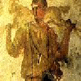
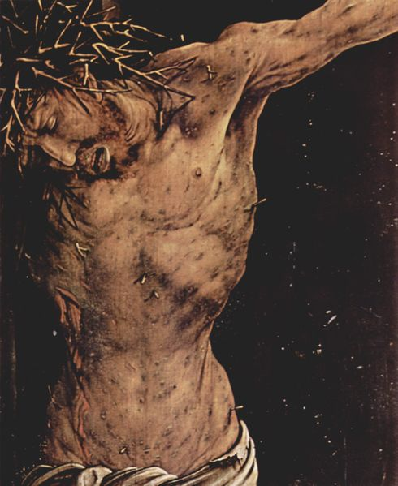
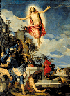

"Gott selbst ist tot", heißt es in jenem lutherischen Liede
- Johann Rist, 1607-1667, "O Traurigkeit, o Herzeleid", 2. Strophe
... dies Bewußtsein drückt dies aus,
daß das Menschliche, das Endliche, Gebrechliche, die Schwäche, das Negative göttliches Moment selbst ist, in Gott selbst ist; daß das Anderssein, das Endliche, das Negative nicht außer Gott ist, als Anderssein die Einheit mit Gott nicht hindert.
Es ist gewußt das Anderssein, die Negation als Moment der göttlichen Natur selbst.
Die höchste Erkenntnis von der Natur der Idee des Geistes ist darin enthalten. >>>
Gott ist gestorben, Gott ist tot
- dieses ist der fürchterlichste Gedanke, daß alles Ewige, alles Wahre nicht ist,
die Negation selbst in Gott ist; der höchste Schmerz, das Gefühl der vollkommenen Rettungslosigkeit, das Aufgeben alles Höheren ist damit verbunden.
- Der Verlauf bleibt aber nicht hier stehen, sondern es tritt nun die Umkehrung ein;
Gott nämlich erhält sich in diesem Prozeß, und dieser ist nur der Tod des Todes.
Gott steht wieder auf zum Leben: es wendet sich somit zum Gegenteil.
Die Auferstehung gehört ebenso wesentlich dem Glauben an: Christus ist nach seiner Auferstehung nur seinen Freunden erschienen; dies ist nicht äußerliche Geschichte für den Unglauben, sondern nur für den Glauben ist diese Erscheinung.
Auf die Auferstehung folgt die Verklärung Christi, und der Triumph der Erhebung zur Rechten Gottes schließt diese Geschichte, welche in diesem Bewußtsein die Explikation der göttlichen Natur selbst ist. Wenn wir in der ersten Sphäre Gott im reinen Gedanken erfaßten,
so fängt es in dieser zweiten Sphäre mit der Unmittelbarkeit für die Anschauung und für die sinnliche Vorstellung an.
Der Prozeß ist nun dieser, daß die unmittelbare Einzelheit aufgehoben wird;
wie in der ersten Sphäre die Verschlossenheit Gottes aufhörte, seine erste Unmittelbarkeit als abstrakte Allgemeinheit, nach der er das Wesen der Wesen ist, aufgehoben wurde, so wird hier nun die Abstraktion der Menschlichkeit, die Unmittelbarkeit der seienden Einzelheit aufgehoben, und dies geschieht durch den Tod.
Der Tod Christi ist aber der Tod dieses Todes selbst, die Negation der Negation.
Denselben Verlauf und Prozeß der Explikation Gottes haben wir im Reiche des Vaters gehabt: hier ist er aber, insofern er Gegenstand des Bewußtseins ist.
Denn es war der Trieb des Anschauens der göttlichen Natur vorhanden.
Am Tode Christi ist dieses Moment zuletzt noch hervorzuheben, daß Gott es ist, der den Tod getötet hat, indem er aus demselben hervorgeht; damit ist die Endlichkeit, Menschlichkeit und Erniedrigung als ein Fremdes an Christo gesetzt als an dem, der schlechthin Gott ist: es zeigt sich, daß die Endlichkeit ihm fremd und von Anderem her angenommen ist; dieses Andere nun sind die Menschen, die dem göttlichen Prozeß gegenüberstehen.
Es ist ihre Endlichkeit, die Christus angenommen hat, diese Endlichkeit in allen ihren Formen,
die in ihrer äußersten Spitze das Böse ist. Diese Menschlichkeit, die selbst Moment im göttlichen Leben ist, wird nun als ein Fremdes, Gott nicht Angehöriges bestimmt.
Diese Endlichkeit aber in ihrem Fürsichsein gegen Gott ist das Böse, ein ihm Fremdes;
er hat es aber angenommen, um es durch seinen Tod zu töten.
Der schmachvolle Tod als die ungeheure Vereinigung dieser absoluten Extreme ist darin zugleich die unendliche Liebe.
Es ist die unendliche Liebe, daß Gott sich mit dem ihm Fremden identisch gesetzt hat, um es zu töten.
Dies ist die Bedeutung des Todes Christi. Christus hat die Sünde der Welt getragen,
hat Gott versöhnt, heißt es.
Dieser Tod ist ebenso wie die höchste Verendlichung zugleich das Aufheben der natürlichen Endlichkeit, des unmittelbaren Daseins und der Entäußerung,
die Auflösung der Schranke.
Diese Aufhebung des Natürlichen ist im Geistigen wesentlich so zu fassen,
daß sie die Bewegung des Geistes ist, sich in sich zu erfassen, dem Natürlichen abzusterben,
daß sie also die Abstraktion vom unmittelbaren Willen und unmittelbaren Bewußtsein ist,
sein Sich-in-sich-Versenken, und aus diesem Schachte nur seine Bestimmung, sein wahres Wesen und seine absolute Allgemeinheit sich zu nehmen.
Was ihm gilt, was seinen Wert hat, das hat er nur in dieser Aufhebung seines natürlichen Seins und Willens.
Das Leiden und der Schmerz dieses Todes, der dies Element der Versöhnung des Geistes mit sich und mit dem, was er an sich ist, enthält, dies negative Moment, das nur dem Geiste als solchem zukommt, ist innere Konversion und Umwandlung.
In dieser konkreten Bedeutung ist aber der Tod hier nicht dargestellt; er ist als natürlicher Tod vorgestellt, denn an der göttlichen Idee kann jene Negation keine andere Darstellung haben.
Wenn die ewige Geschichte des Geistes sich äußerlich, im Natürlichen darstellt,
so kann das Böse, das sich an der göttlichen Idee verwirklicht, nur die Weise des Natürlichen und so die Umkehrung nur die Weise des natürlichen Todes haben.
HEGEL: Bestimmung des Menschen >>>
Tod wo ist dein Stachel >>>



Indem nun der Tod außer dem, daß er der natürliche Tod ist, auch noch der Tod des Missetäters, der entehrendste Tod am Kreuze ist,
so ist darin nicht nur das Natürliche, sondern auch die bürgerliche Entehrung,
die weltliche Schande. >>>
DIe abstrakte oder verständige Logik
Die Güte Gottes
Die dialektische oder
negativ-vernünftige Logik
Die Macht Gottes
DIe spekulative oder positiv-vernünftige Logik
Das Geheimnis Gottes